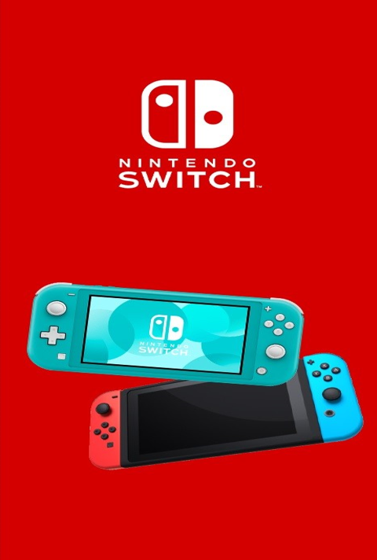
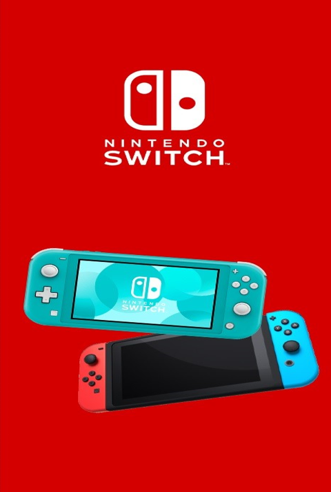

The world of gaming has never been more competitive, with Sony, Nintendo, and Microsoft each offering their own flagship consoles. The PlayStation 5 (PS5), Nintendo Switch, and Xbox Series X are currently the top players in the gaming industry, and each brings something unique to the table. Whether you're a hardcore gamer, a casual player, or someone looking for the best all-around entertainment device, it’s essential to understand what each console offers.
In this blog, we’ll compare the PlayStation 5, Nintendo Switch, and Xbox Series X based on their specs, pros and cons, popular games, and available accessories to help you choose the right one for you.
When deciding between the PlayStation 5, Nintendo Switch, and Xbox Series X, it all comes down to your gaming preferences:
Each console has its own strengths and caters to different types of gamers, so ultimately, the choice depends on what kind of gaming experience you're after.